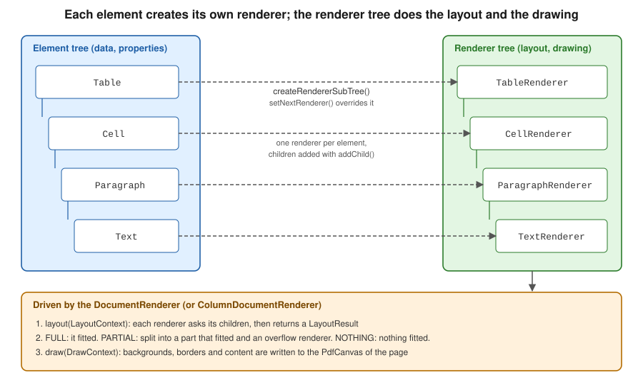

Renderers & Custom Layout
|
This content was generated with the assistance of AI and should be verified against the official documentation before being relied on in production. |
Every layout element you add to an iText 9 Document is only a description: a Paragraph knows its text and its properties, but
not where on the page it will end up or how tall it will be. The work of measuring, splitting and painting is done by a second
tree of objects, the renderers, which implement the IRenderer interface of com.itextpdf.layout.renderer. Most documents never
touch them, because each element creates a suitable renderer on its own. They become important the moment the built-in
behaviour is not what you need: a coloured badge behind a paragraph, a frame with two lines, a paragraph that must never be
split across pages, a layout that flows text into several columns. This page explains the renderer tree, shows how to
replace or subclass a renderer, how a renderer reports the result of a layout pass, how to flow content into columns, and how
to draw rounded corners and custom borders. Versions are stated as of 2026-10-09: iText Core 9.8.0 on Java 21. Every example
was compiled and run against exactly that version, and the output PDFs were rendered and inspected.
The elements themselves are described in Layout Elements, the document and writer objects the renderers draw onto in Document Lifecycle, and the table-specific use of renderers, in particular the cell and table renderers that replaced the old table events, in Tables. The running scenario is the Bookshelf Billing invoice. Page headers, footers and watermarks are drawn from page events rather than from renderers, and are covered in the page on page events of this section.
What the old API did and what replaces it
The classic text iText in Action (Manning, 2006/2007, consulted for the concept order of this page and not reproduced) was
written for iText 1.4 and com.lowagie.text. It builds multi-column pages with ColumnText, which you feed with phrases and
paragraphs and then ask to go() into a rectangle, and with MultiColumnText, which owns a list of column rectangles. Both
classes are part of the iText 5 and OpenPDF API only: they are absent from iText 7, 8 and 9, which are a rewrite of the library
(finding O5 of this section’s source analysis, the part about ColumnText and MultiColumnText). The current approach has
three parts:
-
the layout engine itself is a renderer tree, so "put this content into this rectangle and tell me what did not fit" is what every renderer’s
layoutmethod does, with aLayoutResultinstead of the oldgo()status flags; -
multiple columns are a property of the document’s own renderer: you give the
DocumentaColumnDocumentRendererbuilt from an array of column rectangles, and every element you add afterwards flows from column to column and page to page; -
custom drawing is done by subclassing the renderer of the element, not by registering table, cell or page events on the element.
The old Chapter, Section and HeaderFooter classes, and the PdfPTable event interfaces, are replaced by plain layout
elements, page event handlers and, again, renderers (see Tables
for the table part).
Java moved on as well (finding O28). The book’s listings are Java 1.3 to 5 code without generics, with close() calls in the
middle of a method. All examples on this page are Java 21: they use switch expressions, var, String.formatted,
repeat and try-with-resources, which closes the Document and the PdfDocument in the correct order even when an
exception is thrown. The Maven dependencies, restated here so that the coordinates are complete on this page, are iText Core as a
POM aggregator and, because the same project usually also signs or encrypts, one Bouncy Castle adapter. iText is licensed under
the AGPLv3 or under a commercial licence (see the licensing discussion in the Introduction & Approaches page of this section).
<dependency>
<groupId>com.itextpdf</groupId>
<artifactId>itext-core</artifactId>
<version>9.8.0</version>
<type>pom</type>
</dependency>
<dependency>
<groupId>com.itextpdf</groupId>
<artifactId>bouncy-castle-adapter</artifactId>
<version>9.8.0</version>
</dependency>From elements to renderers
The model of iText 9 separates three things, which the figure below shows for a table with one row (the larger picture is in iText Architecture & Modules):
-
the element tree:
Table,Cell,Paragraph,Text. These classes hold content and properties (font, margins, borders, colours) and nothing else. They implementIElement; -
the renderer tree:
TableRenderer,CellRenderer,ParagraphRenderer,TextRenderer. A renderer holds a reference to its model element (getModelElement()), its children (getChildRenderers()), and, after layout, the area it occupies (getOccupiedArea()). Renderers are created by the element for each layout and are not meant to be reused; -
the document renderer,
DocumentRenderer, the root of the tree, which owns the list of pages and decides where the next piece of content goes.

When you call document.add(element), the document asks the element for a renderer with createRendererSubTree(). The
default implementation calls the protected factory makeNewRenderer() of the element, which returns the right renderer
class, and then recursively adds the renderers of the children with addChild. The root renderer then calls layout on the
new subtree, handing it the current free area, and draw on the result, once the page is known. The next example performs
the same steps by hand for a one-row table so that the tree can be printed. It uses a LayoutResult whose getStatus() is one of three integer
constants, FULL, PARTIAL and NOTHING, described in the layout results section below. Note the Java 21 switch expression on those constants.
package com.example.billing;
import com.itextpdf.kernel.geom.PageSize;
import com.itextpdf.kernel.geom.Rectangle;
import com.itextpdf.kernel.pdf.PdfDocument;
import com.itextpdf.kernel.pdf.PdfWriter;
import com.itextpdf.layout.Document;
import com.itextpdf.layout.element.Cell;
import com.itextpdf.layout.element.Paragraph;
import com.itextpdf.layout.element.Table;
import com.itextpdf.layout.layout.LayoutArea;
import com.itextpdf.layout.layout.LayoutContext;
import com.itextpdf.layout.layout.LayoutResult;
import com.itextpdf.layout.renderer.IRenderer;
import java.io.ByteArrayOutputStream;
import java.io.IOException;
public class RendererTreeDump {
public static void main(String[] args) throws IOException {
Table table = new Table(2);
table.addCell(new Cell().add(new Paragraph("Clean Code")));
table.addCell(new Cell().add(new Paragraph("29.90")));
// A renderer tree is built from the element tree; nothing is drawn yet
IRenderer root = table.createRendererSubTree();
// Layout needs a PdfDocument only for fonts; an in-memory one is enough
try (PdfDocument pdf = new PdfDocument(new PdfWriter(new ByteArrayOutputStream()))) {
pdf.addNewPage(PageSize.A4);
Rectangle area = new Rectangle(36, 36, 523, 770);
LayoutResult result = root.setParent(new Document(pdf).getRenderer())
.layout(new LayoutContext(new LayoutArea(1, area)));
System.out.println("status = " + switch (result.getStatus()) {
case LayoutResult.FULL -> "FULL";
case LayoutResult.PARTIAL -> "PARTIAL";
default -> "NOTHING";
});
System.out.println("occupied = " + result.getOccupiedArea().getBBox());
dump(root, 0);
}
}
static void dump(IRenderer renderer, int depth) {
System.out.println(" ".repeat(depth) + renderer.getClass().getSimpleName()
+ " <- " + renderer.getModelElement().getClass().getSimpleName());
renderer.getChildRenderers().forEach(child -> dump(child, depth + 1));
}
}Running it prints the following tree. Header and footer rows of a table are laid out by their own sub-renderers, which is why the example uses a table without them.
status = FULL
occupied = Rectangle: 102.90401x22.981995
TableRenderer <- Table
CellRenderer <- Cell
ParagraphRenderer <- Paragraph
TextRenderer <- Text
CellRenderer <- Cell
ParagraphRenderer <- Paragraph
TextRenderer <- TextThis example derives from the renderer chapter of the iText tutorial, Chapter 3: Using renderers and event handlers,
and from the API documentation of IRenderer. The tutorial and many forum answers were written
for iText 7.0 and show some older signatures; the code above is the compiled truth for 9.8.0 and the classes it names are the ones
in the 9.8.0 API.
Replacing a renderer: setNextRenderer and getNextRenderer
Every element has a setNextRenderer(IRenderer) method. It tells the element to use your renderer for its next layout, instead of
the default one. The usual recipe has three steps:
-
subclass the renderer that matches the element:
ParagraphRenderer,CellRenderer,TableRenderer,DivRenderer,ImageRenderer,TextRenderer, and so on; -
override
draw(DrawContext)(or one of its finer-grained helpers,drawBackground,drawBorder,drawChildren) to paint what you need before or after callingsuper; -
override
getNextRenderer()so that it returns a new instance of your own class. iText calls it whenever the element is split over several areas (for instance a paragraph that continues on the next page): the overflow part is created throughgetNextRenderer(), and if you do not override it you silently get the stock renderer for the continuation. This is the most common mistake in custom renderers.
The next example paints a rounded green "PAID" badge behind a paragraph, and logs the layout result of each cell of a table by
overriding layout. In draw, the canvas comes from the DrawContext and the position from getOccupiedAreaBBox(), which is
valid because draw always runs after layout. saveState() and restoreState() isolate the colour change so that the text drawn by super.draw is not affected.
package com.example.billing;
import com.itextpdf.io.font.constants.StandardFonts;
import com.itextpdf.kernel.font.PdfFont;
import com.itextpdf.kernel.font.PdfFontFactory;
import com.itextpdf.kernel.colors.ColorConstants;
import com.itextpdf.kernel.geom.Rectangle;
import com.itextpdf.kernel.pdf.PdfDocument;
import com.itextpdf.kernel.pdf.PdfWriter;
import com.itextpdf.kernel.pdf.canvas.PdfCanvas;
import com.itextpdf.layout.Document;
import com.itextpdf.layout.element.Cell;
import com.itextpdf.layout.element.Paragraph;
import com.itextpdf.layout.element.Table;
import com.itextpdf.layout.layout.LayoutContext;
import com.itextpdf.layout.layout.LayoutResult;
import com.itextpdf.layout.properties.UnitValue;
import com.itextpdf.layout.renderer.CellRenderer;
import com.itextpdf.layout.renderer.DrawContext;
import com.itextpdf.layout.renderer.IRenderer;
import com.itextpdf.layout.renderer.ParagraphRenderer;
import java.io.IOException;
import java.util.Locale;
public class InvoiceRenderers {
/** Paints a rounded green badge behind a paragraph, then lets the normal drawing run. */
static class BadgeRenderer extends ParagraphRenderer {
BadgeRenderer(Paragraph modelElement) {
super(modelElement);
}
@Override
public IRenderer getNextRenderer() {
// Required: iText calls this when the paragraph is split across areas
return new BadgeRenderer((Paragraph) modelElement);
}
@Override
public void draw(DrawContext drawContext) {
Rectangle box = getOccupiedAreaBBox();
PdfCanvas canvas = drawContext.getCanvas();
canvas.saveState()
.setFillColor(ColorConstants.GREEN)
.roundRectangle(box.getX() - 4, box.getY() - 3, box.getWidth() + 8, box.getHeight() + 6, 6)
.fill()
.restoreState();
super.draw(drawContext);
}
}
/** Logs the layout result of every cell of a table, to show what layout() returns. */
static class LoggingCellRenderer extends CellRenderer {
LoggingCellRenderer(Cell modelElement) {
super(modelElement);
}
@Override
public LayoutResult layout(LayoutContext layoutContext) {
LayoutResult result = super.layout(layoutContext);
String status = switch (result.getStatus()) {
case LayoutResult.FULL -> "FULL";
case LayoutResult.PARTIAL -> "PARTIAL";
default -> "NOTHING";
};
System.out.printf(Locale.ROOT, "cell (%d,%d) -> %s, height %.1f%n", ((Cell) getModelElement()).getRow(),
((Cell) getModelElement()).getCol(), status, result.getOccupiedArea().getBBox().getHeight());
return result;
}
@Override
public IRenderer getNextRenderer() {
return new LoggingCellRenderer((Cell) modelElement);
}
}
public static void main(String[] args) throws IOException {
try (PdfDocument pdf = new PdfDocument(new PdfWriter("renderers.pdf"));
Document document = new Document(pdf)) {
PdfFont bold = PdfFontFactory.createFont(StandardFonts.HELVETICA_BOLD);
Paragraph paid = new Paragraph("PAID").setFont(bold);
paid.setNextRenderer(new BadgeRenderer(paid));
document.add(new Paragraph("Invoice BB-2026-0042"));
document.add(paid);
Table table = new Table(UnitValue.createPercentArray(new float[] {7, 3})).useAllAvailableWidth();
for (String text : new String[] {"Clean Code", "29.90", "Effective Java", "39.90"}) {
Cell cell = new Cell().add(new Paragraph(text));
cell.setNextRenderer(new LoggingCellRenderer(cell));
table.addCell(cell);
}
document.add(table);
}
}
}The program prints one line per cell, for example cell (0,0) -> FULL, height 22.0. The rendered page shows the green rounded
badge behind the word PAID and a two-column table below it. The pattern derives from the KB tutorial
Chapter 3: Using renderers and event handlers
and the API documents ParagraphRenderer,
CellRenderer and DrawContext.
A renderer is not limited to decorating. AbstractRenderer offers getProperty, setProperty and getModelElement, so a
renderer can read custom properties set on its element, and can wrap or replace the children it draws. When you only want a
different look for many elements of the same kind, a renderer is still the right tool; when you only want a different colour or
border for one element, use the element’s own setters.
Layout results and custom layout
The layout(LayoutContext) method of a renderer is where measuring happens. The LayoutContext carries a LayoutArea: the page
number and a Rectangle with the space still free. The method returns a LayoutResult, whose status tells the caller what happened:
| Status | Meaning | What the caller does |
|---|---|---|
|
The whole renderer fitted into the area. |
Keeps the occupied area and goes on with the next element. |
|
Part of the content fitted. The result carries the split renderer (what fitted) and the overflow renderer (what is left). |
Draws the split renderer, starts a new area (next column or next page) and lays out the overflow renderer there. |
|
Nothing fitted. The result carries only an overflow renderer. |
Moves to the next area and lays out the whole renderer again. |
The factory arguments of LayoutResult are status, the occupied area, the split renderer, the overflow renderer, and, for
NOTHING, optionally the renderer that caused the failure. Because the layout engine only looks at that result, overriding
layout lets you change the splitting policy. The example below makes a paragraph indivisible: if a normal layout would split it
(PARTIAL), it reports NOTHING with itself as the overflow, so the entire paragraph moves to the next page. This is what the
setKeepTogether(true) property of the element does for the simple case; writing the renderer yourself is useful when the
rule is more specific, for instance "keep together only if at most six lines".
package com.example.billing;
import com.itextpdf.kernel.pdf.PdfDocument;
import com.itextpdf.kernel.pdf.PdfWriter;
import com.itextpdf.layout.Document;
import com.itextpdf.layout.element.Paragraph;
import com.itextpdf.layout.layout.LayoutContext;
import com.itextpdf.layout.layout.LayoutResult;
import com.itextpdf.layout.renderer.IRenderer;
import com.itextpdf.layout.renderer.ParagraphRenderer;
import java.io.IOException;
public class NoSplit {
/** A paragraph that is never split: if it only partly fits, the whole paragraph moves on. */
static class NoSplitParagraphRenderer extends ParagraphRenderer {
NoSplitParagraphRenderer(Paragraph modelElement) {
super(modelElement);
}
@Override
public LayoutResult layout(LayoutContext layoutContext) {
LayoutResult result = super.layout(layoutContext);
if (result.getStatus() == LayoutResult.PARTIAL) {
// NOTHING: no split part, the overflow renderer is the whole of this renderer
return new LayoutResult(LayoutResult.NOTHING, null, null, this);
}
return result;
}
@Override
public IRenderer getNextRenderer() {
return new NoSplitParagraphRenderer((Paragraph) modelElement);
}
}
public static void main(String[] args) throws IOException {
try (PdfDocument pdf = new PdfDocument(new PdfWriter("no-split.pdf"));
Document document = new Document(pdf)) {
for (int i = 1; i <= 26; i++) {
document.add(new Paragraph("Filler line " + i));
}
Paragraph clause = new Paragraph("Clause 9. ".repeat(60));
clause.setNextRenderer(new NoSplitParagraphRenderer(clause));
document.add(clause);
System.out.println("pages = " + pdf.getNumberOfPages());
}
}
}With 26 filler lines the page has room for four more lines. Without the custom renderer, four lines of the clause stay on page 1 and the
rest continues on page 2; with it, the clause starts on page 2 and page 1 ends after the filler. The mechanism is described in the
API documentation of LayoutResult and LayoutContext.
Two further customisation points belong to the same family. A renderer can override getOccupiedAreaBBox()-related helpers such as
applyMargins, applyPaddings and applyBorderBox when its drawing must respect the box model, as the border example below does. And the
root renderer can be replaced, which is the subject of the next section.
Multi-column layout with ColumnDocumentRenderer
ColumnDocumentRenderer (package com.itextpdf.layout, not com.itextpdf.layout.renderer: a frequent import slip, because
DocumentRenderer sits in the renderer package) is a DocumentRenderer whose areas are not the whole page but a list of
rectangles that you provide. The renderer fills the first rectangle, then the second, and when the last one is full it starts a
new page and begins again with the first. It replaces both ColumnText and MultiColumnText of the old API: content is added
with the ordinary document.add(...), text is split between columns by the same LayoutResult mechanism, and a paragraph can
continue from one column to the next.
You install the renderer with document.setRenderer(...). Elements added before the call keep the previous flow, and you can
switch back with a plain DocumentRenderer later, which is useful for a title across the full width followed by body text in columns,
or the other way round. The example below writes a title in a single column, switches to three columns for the terms and conditions of the
store, and then returns to a single column on a fresh page for a signature line. The column rectangles are in default user space
units (points), with the origin at the bottom left of the page. The first two arguments of each rectangle are the
lower-left corner, then width and height, and the height reserves room for the title above the columns.
package com.example.billing;
import com.itextpdf.kernel.geom.PageSize;
import com.itextpdf.kernel.geom.Rectangle;
import com.itextpdf.kernel.pdf.PdfDocument;
import com.itextpdf.kernel.pdf.PdfWriter;
import com.itextpdf.layout.Document;
import com.itextpdf.layout.element.AreaBreak;
import com.itextpdf.layout.element.Paragraph;
import com.itextpdf.layout.properties.AreaBreakType;
import com.itextpdf.layout.properties.TextAlignment;
import com.itextpdf.layout.ColumnDocumentRenderer;
import com.itextpdf.layout.renderer.DocumentRenderer;
import java.io.IOException;
import java.util.ArrayList;
import java.util.List;
public class Columns {
public static void main(String[] args) throws IOException {
try (PdfDocument pdf = new PdfDocument(new PdfWriter("columns.pdf"));
Document document = new Document(pdf, PageSize.A4)) {
document.add(new Paragraph("Bookshelf: terms and conditions").setFontSize(16));
// Switch from the default one-column renderer to a three-column one
float gutter = 20;
Rectangle page = PageSize.A4;
float columnWidth = (page.getWidth() - 72 - 2 * gutter) / 3;
List<Rectangle> columns = new ArrayList<>();
for (int i = 0; i < 3; i++) {
columns.add(new Rectangle(36 + i * (columnWidth + gutter), 36, columnWidth, page.getHeight() - 36 - 90));
}
document.setRenderer(new ColumnDocumentRenderer(document, columns.toArray(new Rectangle[0])));
for (int i = 1; i <= 40; i++) {
document.add(new Paragraph(("Clause %d. The buyer may return unopened books within 14 days of delivery "
+ "for a full refund of the purchase price.").formatted(i))
.setTextAlignment(TextAlignment.JUSTIFIED).setFontSize(9));
}
// Go back to the single-column flow on a fresh page
document.add(new AreaBreak(AreaBreakType.NEXT_PAGE));
document.setRenderer(new DocumentRenderer(document));
document.add(new Paragraph("Signature: ______________________"));
}
}
}With the 40 clauses of the example, the three columns of the first page fill with clauses 1 to 35 and the remaining five continue at the top of the first column
of page 2; the signature line is on page 3. The two-argument constructor ColumnDocumentRenderer(Document, Rectangle[]) creates new pages
using the document’s page size; the three-argument form takes a boolean immediateFlush as second argument, which writes pages to the output as they complete in large documents. The behaviour derives from the API documentation of
ColumnDocumentRenderer and DocumentRenderer.
For anything more irregular than equal columns, subclass DocumentRenderer or ColumnDocumentRenderer and override
updateCurrentArea(LayoutResult), which decides the next area every time the current one is full; the rectangles may differ from page to
page, for instance to leave room for an image on the first page. The areas stay rectangles, which is the main difference from the
free-form column shapes that the old ColumnText supported.
The 9.8.0 property set also contains Property.COLUMN_COUNT and Property.COLUMN_GAP, and the renderer package has a MulticolRenderer, which
are aimed at CSS multi-column content. They take effect on a MulticolContainer (in com.itextpdf.layout.element), the Div subclass
whose renderer is the MulticolRenderer, which is what pdfHTML uses for CSS multi-column layout. In the test for this page a plain layout Div
given only those two properties was not flowed into columns, because a plain Div does not use that renderer, so this page relies on
ColumnDocumentRenderer for programmatic layouts and leaves multi-column CSS to HTML conversion.
Rounded corners and custom borders
The easy case needs no renderer. In iText 9 block elements such as Div, Paragraph and Cell support setBorderRadius(BorderRadius), and the radius is
applied to the border and the background of the element. Use new BorderRadius(8) for a uniform radius in points, or the
per-corner properties (Property.BORDER_TOP_LEFT_RADIUS and its three siblings) when the corners differ. The first
Div of the next example is a total box with a blue border, a rounded outline and a translucent grey background.
The second Div uses a renderer to add something no property provides, a second thin frame inside the border. It overrides
drawBorder, calls super.drawBorder to paint the normal border (with its own radius), and then draws the inner frame on the same canvas.
Because getOccupiedAreaBBox() includes the margins of the element, the code removes them with
applyMargins(rect, false) before computing the inner rectangle; false means "subtract" and true means "add". Skipping that step is the
usual reason for a custom frame that appears shifted by the margin.
package com.example.billing;
import com.itextpdf.kernel.colors.ColorConstants;
import com.itextpdf.kernel.pdf.PdfDocument;
import com.itextpdf.kernel.pdf.PdfWriter;
import com.itextpdf.layout.Document;
import com.itextpdf.layout.borders.SolidBorder;
import com.itextpdf.layout.element.Div;
import com.itextpdf.layout.element.Paragraph;
import com.itextpdf.layout.properties.BorderRadius;
import com.itextpdf.layout.renderer.DivRenderer;
import com.itextpdf.layout.renderer.DrawContext;
import com.itextpdf.layout.renderer.IRenderer;
import java.io.IOException;
public class Rounded {
/** Draws a second, inner frame after the normal border. */
static class DoubleFrameRenderer extends DivRenderer {
DoubleFrameRenderer(Div modelElement) {
super(modelElement);
}
@Override
public IRenderer getNextRenderer() {
return new DoubleFrameRenderer((Div) modelElement);
}
@Override
public void drawBorder(DrawContext drawContext) {
super.drawBorder(drawContext);
var box = applyMargins(getOccupiedAreaBBox().clone(), false);
drawContext.getCanvas().saveState()
.setStrokeColor(ColorConstants.DARK_GRAY).setLineWidth(0.5f)
.roundRectangle(box.getX() + 4, box.getY() + 4, box.getWidth() - 8, box.getHeight() - 8, 4)
.stroke().restoreState();
}
}
public static void main(String[] args) throws IOException {
try (PdfDocument pdf = new PdfDocument(new PdfWriter("rounded.pdf"));
Document document = new Document(pdf)) {
Div card = new Div().add(new Paragraph("Total due: 69.80 EUR"))
.setBorder(new SolidBorder(ColorConstants.BLUE, 1.5f))
.setBorderRadius(new BorderRadius(8))
.setBackgroundColor(ColorConstants.LIGHT_GRAY, 0.3f)
.setPadding(12);
document.add(card);
Div framed = new Div().add(new Paragraph("Thank you for your order"))
.setBorder(new SolidBorder(1)).setPadding(12).setMarginTop(20)
.setBorderRadius(new BorderRadius(10));
framed.setNextRenderer(new DoubleFrameRenderer(framed));
document.add(framed);
}
}
}Rendered, the first box has rounded blue corners and a light background and the second one a rounded black border with a thin
double frame inside. For borders that are a different kind of line, rather than an additional drawing, subclass the abstract class
Border: it declares draw(PdfCanvas, ...) for the four sides, drawCellBorder for table cells and
getType(); the ready-made SolidBorder, DashedBorder, DottedBorder, DoubleBorder, RoundDotsBorder and the groove, ridge, inset and outset borders are examples to copy. A custom
Border is assigned with setBorder like any other, so the element needs no renderer at all. The table-specific variant, drawing different borders for header cells or for the outer frame, is shown in the
KB page Table and cell events to draw borders, which still talks about "events" but
whose iText 7+ code is a cell or table renderer exactly as above. The classes used are documented in
BorderRadius and AbstractRenderer.
Choosing the right extension point
| You want to | Use | Why |
|---|---|---|
A different colour, border, margin or font for one element |
The element’s setters |
No renderer needed. |
Rounded corners |
|
Built in; no renderer needed. |
Extra painting behind or around an element |
A renderer subclass overriding |
You get the canvas and the final occupied area. |
A different splitting rule |
A renderer subclass overriding |
The |
Text in several columns |
|
Replaces |
Irregular areas, or different columns per page |
A |
The root renderer chooses every next area. |
Header, footer, "page X of Y", watermark |
A page event handler |
Not tied to an element; see the page events page of this section. |
A line style that is not solid, dashed or dotted |
A |
It is reusable for every side and for table cells. |
References
-
iText Knowledge Base, Chapter 3: Using renderers and event handlers: https://kb.itextpdf.com/itext/chapter-3-using-renderers-and-event-handlers
-
iText Knowledge Base, Table and cell events to draw borders: https://kb.itextpdf.com/itext/table-and-cell-events-to-draw-borders
-
iText Knowledge Base, iText: Building Blocks: https://kb.itextpdf.com/itext/itext-7-building-blocks
-
iText 9.8.0 API,
IRenderer: https://api.itextpdf.com/iText/java/latest/com/itextpdf/layout/renderer/IRenderer.html -
iText 9.8.0 API,
AbstractRenderer: https://api.itextpdf.com/iText/java/latest/com/itextpdf/layout/renderer/AbstractRenderer.html -
iText 9.8.0 API,
ParagraphRenderer: https://api.itextpdf.com/iText/java/latest/com/itextpdf/layout/renderer/ParagraphRenderer.html -
iText 9.8.0 API,
DocumentRenderer: https://api.itextpdf.com/iText/java/latest/com/itextpdf/layout/renderer/DocumentRenderer.html -
iText 9.8.0 API,
ColumnDocumentRenderer: https://api.itextpdf.com/iText/java/latest/com/itextpdf/layout/ColumnDocumentRenderer.html -
iText 9.8.0 API,
LayoutResult: https://api.itextpdf.com/iText/java/latest/com/itextpdf/layout/layout/LayoutResult.html -
iText 9.8.0 API,
LayoutContext: https://api.itextpdf.com/iText/java/latest/com/itextpdf/layout/layout/LayoutContext.html -
iText 9.8.0 API,
DrawContext: https://api.itextpdf.com/iText/java/latest/com/itextpdf/layout/renderer/DrawContext.html -
iText 9.8.0 API,
BorderRadius: https://api.itextpdf.com/iText/java/latest/com/itextpdf/layout/properties/BorderRadius.html -
iText 9.8.0 API,
Border: https://api.itextpdf.com/iText/java/latest/com/itextpdf/layout/borders/Border.html -
iText licensing, AGPLv3 versus commercial: https://kb.itextpdf.com/itext/what-is-the-difference-between-agpl-and-commercial
-
iText Core on Maven Central: https://central.sonatype.com/artifact/com.itextpdf/itext-core
-
Bruno Lowagie, iText in Action: Creating and Manipulating PDF (Manning, 2006/2007), consulted for concept coverage only: https://www.manning.com/books/itext-in-action